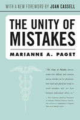

<body bgcolor="#FFFFFF" text="#000000" link="#0000FF" vlink="#CC0000" alink="#CC0000"><center><hr width="350" size="1" align="center" noshade>The classic investigation of medical errors<hr width="350" size="1" align="center" noshade><p><a href="https://cdcshoppingcart.uchicago.edu/Cart/ChicagoBook.aspx?ISBN=9781592131860&&PRESS=temple" target="_top">Buy this book!</a> | <a href="https://cdcshoppingcart.uchicago.edu/Cart/Cart.aspx?PRESS=temple" target="_top">View Cart</a> | <a href="https://cdcshoppingcart.uchicago.edu/Cart/Cart.aspx?PRESS=temple" target="_top">Check Out</a></p><p></p></center><!--none//--><h1>The Unity of Mistakes</h1>
<H2>A Phenomenological Interpretation of Medical Work</H2>
<H2><!-- With a new Foreword by Joan Cassell --></H2>
<h3>Marianne A. Paget, foreword by Joan Cassell</h3>
<P>paper 1-59213-186-7 $26.95, Feb 04, <FONT COLOR=#990033>Available</FONT>
<BR> 206 pp
5.5x8.25
</P><BLOCKQUOTE><I>"</I>The Unity of Mistakes<I> explores one of the most significant issues in clinical medicine It does so with considerable originality, and with great sensitivity to the realities of actual clinical work.... This is a substantial contribution to the sociological literature on medicine."</I>
<br>&#151<b>Richard M. Zaner</b>, Vanderbilt University<I></I></BLOCKQUOTE>
<p>Marianne Paget's <i>The Unity of Mistakes</i> has long been considered a landmark text on the nature of medical error. Paget&#151who herself died because of a medical error&#151argued that mistakes are an intrinsic part of the clinical process. Encompassing a much wider range of error than the terms "malpractice," "incompetence,"or "negligence" denote, <i>The Unity of Mistakes</i> takes an existential view of medical work in which things go wrong as a matter of course, and probes what Paget called the "complex sorrow"that can result when things do go wrong. This new paperback edition contains a Foreword by Joan Cassell, anthropologist and author of <i>Expected Miracles: Surgeons at Work</i>.
<p>"I began this study when I became aware of the anguish of clinical action and of the moral ambiguity of being a clinician, a person who acts, acts sometimes mistakenly, and, therefore, lives with the experience of being wrong." With this statement, Marianne Paget introduces her study of medical mistakes and their meaning. Using as her "text" in-depth interviews with forty doctors, she explores the subjective experience of physicians who inevitably make mistakes.
<p>Marianne Paget argues that mistakes are an intrinsic feature of medical work which she calls an error-ridden activity. Mistakes involve action and action contains risk. Since medical mistakes put at risk human beings (not just the acted upon but the actors), her concern is with the subtle effects this endemic danger has upon clinical work.
<p>Through close textual analysis, the author examines the ways in which particular actions (which seemed right at the time) are recognized as errors and responded to. Her study encompasses a much wider range of error than the terms "malpractice," "incompetence," or "negligence" denote. She takes an existential view of medical work in which things go wrong as a matter of course and probes what she calls the "complex sorrow" that can result.
<BR>&nbsp;<h2>Excerpt</h2><P>Excerpt available at <a href="http://www.temple.edu/tempress">www.temple.edu/tempress</a></p>
<BR>&nbsp;<h2>Reviews</h2>
<p><i>"</i>The Unity of Mistakes<i> demonstrates how difficult and common serious mistakes are for physicians, how hard each physician works to avoid mistakes, and yet how limited individual effort is."</i>
<br>&#151<b>Atul Gawande</b>, Assistant Professor of Surgery, Harvard Medical School, and author of <i>Complications: A Surgeon's Notes on an Imperfect Science</i>
<p><i>"[Paget's] analyses... are acute. She crystallizes the temporal and moral ambiguities of actions that become wrong as they develop, of understandable choices and irreparable harms, of knowing too late. She is careful to separate the often muddled concepts of mistake, fault, negligence, and blame."</i>
<br>&#151<b>Susan S. Mattingly</b>, <i>The New England Journal of Medicine</i>
<p><i>"[A] radical, thoughtful, and provocative analysis of a painful area of clinical work...For those who spend their time on the highwire of practice, Paget provides a framework for confronting and comprehending personal failures, and still leaves room to forgive and go on practicing."</i>
<br>&#151<b>Richard J. Baron</b>, <i>Bioethics Books</i>
<p><i>"Goes well beyond other work on mistakes...Paget's work illustrates very well the relationship between the characteristics of work and its social organization."</i>
<br>&#151<b>Gail Henderson</b>, <i>Contemporary Sociology</i>
<p><I>"Paget�s analysis displays her strong talent in uncovering the subtle qualities of the physician�s experience of medical mistakes, her sensitivity in responding to those subtleties on a linguistic level, and her conceptual skill in constructing new terms to reflect them."</I>
<br>&#151<b>Ronald Silvers</b>, The Ontario Institute for Studies in Education
<p><i>"Paget artfully argues that medical mistakes are part of the medical process and, in the end, are inevitable.... Paget's work will serve as a guiding force...This text [should] challenge the thinking of other readers in their research and interactions in the medical world."</i>
<br>&#151;<b><i>The Journal of Health Communication: International Perspectives</i></b>
<BR>&nbsp;<h2>Contents</h2><P>
<p>Foreword
<br>Acknowledgments
<br>1. The Language of Mistakes
<br>2. Language Departures
<br>3. Acting-as-If
<br>4. The Semantic Sense of Mistakes
<br>5. A Language of Intention
<br>6. The Complex Sorrow of Clinical Work
<br>7. The Unity of Mistakes
<br>Notes
<br>References
<br>Index
</P><BR>&nbsp;<H2>About the Author(s)</H2>
<table><tr><td valign="top"><img src="/tempress/authors/541_au1.gif" height="90" width="75"></td><td width="100%" valign="middle"><p><b>Marianne A. Paget</b> (1940-1989) was a sociologist and researcher who in the course of her career held positions at various universities, and at the time of her death was a research associate in the Department of Sociology at Brandeis University.</P></td></tr></table><P><b>Joan Cassell</b> is Research Associate in the department of Anthropology at Washington University in St. Louis, and the author of several books, including <i><a href="806_reg.html" target="_top">Expected Miracles: Surgeons at Work</a></i> and <i>The Surgeon in the Woman's Body</i>.</P>
<BR><H2>Subject Categories</H2>
<p><A HREF="/tempress/health.html" TARGET="_top">Health and Health Policy</a>
<BR><A HREF="/tempress/science.html" TARGET="_top">Science</a>
<BR><A HREF="/tempress/sociology.html" TARGET="_top">Sociology</a>
</p>
<p align="center"><a href="https://cdcshoppingcart.uchicago.edu/Cart/ChicagoBook.aspx?ISBN=9781592131860&&PRESS=temple" target="_top">Buy this book!</a> | <a href="https://cdcshoppingcart.uchicago.edu/Cart/Cart.aspx?PRESS=temple" target="_top">View Cart</a> | <a href="https://cdcshoppingcart.uchicago.edu/Cart/Cart.aspx?PRESS=temple" target="_top">Check Out</a></p><p><font face="Arial" size="1"><a href="copyright.html" onMouseOver="window.status='Web Copyright Policy';return true;" onMouseOut="window.status=''" title="Web Copyright Policy">&copy;</a> 2015 <a href="http://www.temple.edu" target="new" onMouseOver="window.status='Link to Temple University home page';return true;" onMouseOut="window.status=''" title="Link to Temple University home page">Temple University</a>. All Rights Reserved. http://www.temple.edu/tempress/titles/541_reg.html</font></p>